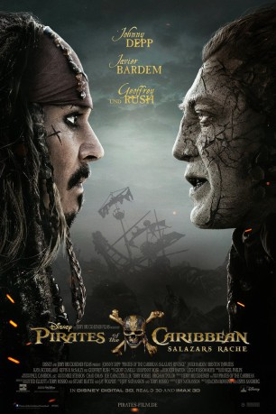

#7054 Fluch der Karibik 5 - Salazars Rache
Alternativ: Pirates of the Caribbean: Dead Men Tell No Tales
 
 IMDB-Wertung: 6.6 / 10
IMDB-Wertung: 6.6 / 10  Metascore: 39
Metascore: 39 
Im neuen Abenteuer gerät Captain Jack Sparrow einmal mehr in große Not, als er auf eine Horde Geister-Piraten trifft, angeführt von Sparrows Nemesis Captain Salazar. Die Untoten sind aus dem Bermuda-Dreieck entkommen, in dem sie gefangen waren, und verfolgen nun nur ein Ziel: Sie wollen alle Piraten töten, zuallererst Jack Sparrow. Dessen einzige Chance liegt nun darin, Poseidons Dreizack zu finden, dessen magische Kräfte die Geister-Piraten erneut bannen können und seinem Besitzer die Kontrolle über die Weltmeere verleihen.
Jahr: 2017
Dauer: 129 Minuten
FSK: 12
Land: USA Studio: Walt Disney Studios Motion PicturesTonspuren: DTS - ,
Untertitel: Deutsch, Englisch,
Auflösung: 1080p (1920x800) Größe: 12595 MB
Genre: Action, Abenteuer, Fantasy
Regisseur: Joachim Rønning, Espen Sandberg
Drehbuch: Jeff Nathanson
Soundtrack:
Darsteller:
Datei: X:\5-Pentalogie(A-Z)\Fluch der Karibik\Fluch der Karibik 5 - Salazars Rache (2017, FSK12, 1920x800).mkv seit 21.09.2017
Festplatte: HD Collection-3(N-Z)-6(A-Z)
 Es gibt insgesamt 10 Filme in der Gruppe '5-Pentalogie(A-Z)\Fluch der Karibik'
Es gibt insgesamt 10 Filme in der Gruppe '5-Pentalogie(A-Z)\Fluch der Karibik'